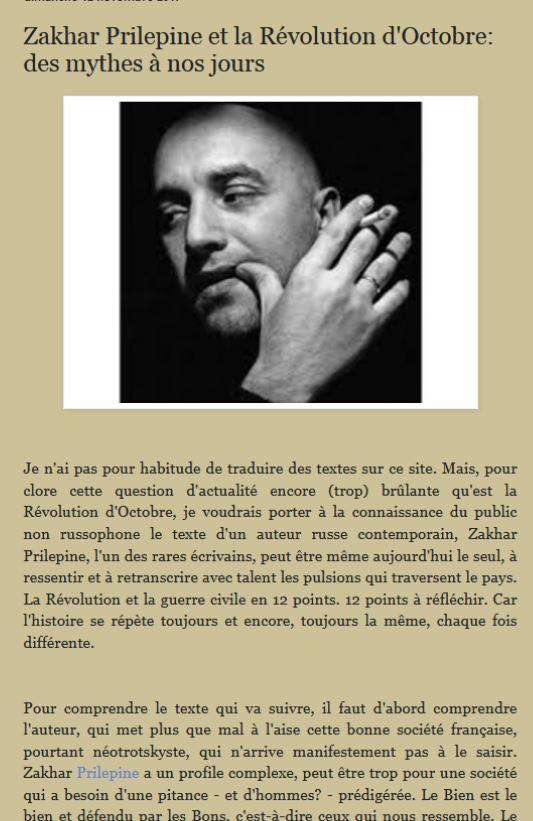
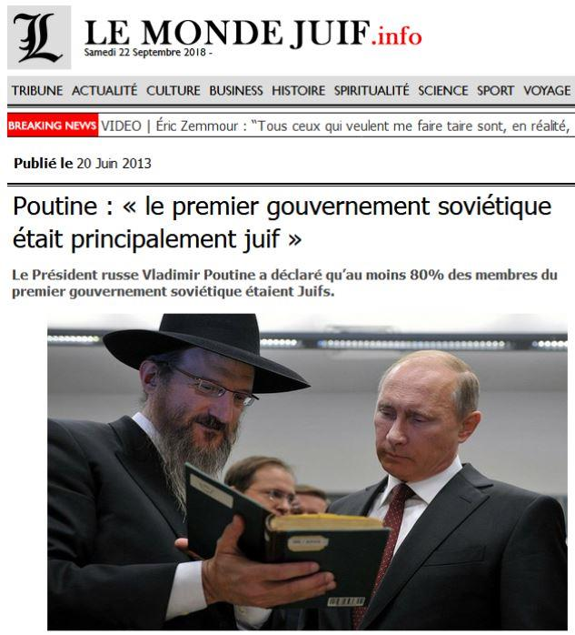
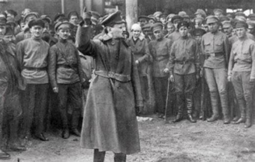

Devant le négationnisme communiste qui se manifeste de plus en plus et malgré mon soutien à la population du Donbass, exterminée par de pseudo néonazis ukrainiens soutenus par de vrais capitalistes apatrides, je tiens à me démarquer de la récupération de la cause par des nostalgiques d’un régime à qui je ne pardonnerai jamais ses exactions ni sa haine méticuleuse et avérée de tout ce qui me faisait aimer la Russie. Faisant suite à un article intitulé « Zakhar Prilepine et la Révolution d’Octobre des mythes à nos jours1 » publié par Russiepolitics, dont j’apprécie par ailleurs toutes les autres analyses sur la Russie contemporaine et la politique occidentale à son égard, Il aurait fallu équilibrer ses propos par un contradicteur.
J’y répondrai par un commentaire (auquel je souscris pleinement) à ce même article :
Zakhar Prilepine porte toujours ses idées national-bolcheviques et se livre ici à une manipulation des faits, souvent par omission, pour les faire valoir.
Personnellement j'ai relevé sur ses douze points :
1 - En accord avec le précédent commentaire, il serait bon de rappeler que les bolcheviques avaient sapé le gouvernement du Tsar et l'effort de guerre de la Russie qui avait été attaquée par les Empires Allemand et Austro-Hongrois.
2 - Relever que le gouvernement provisoire à tendance libérale et pro-occidental avait trahi le Tsar et détourné le pouvoir n'exonère pas les bolcheviks de leur coup d'état d'octobre suivi de l'établissement de la dictature "du prolétariat", ni de l'assassinat du Tsar et de sa famille. S'il est difficile d'être certain de ce qui se serait passé si le gouvernement provisoire avait pu continuer, les chances d'éviter la guerre civile, de signer le calamiteux traité de Brest-Litovsk et les interventions étrangères eurent été grandes. Donc oui, je pense sincèrement que la Russie se serait portée mieux, et de beaucoup, sans Lénine et les bolcheviques.
3 - L'intérêt des Austro-Allemands à soutenir les bolcheviques pour désorganiser leur seul adversaire à l'est, le sortir de la guerre et pouvoir se concentrer sur le seul front ouest est évident. Ce but fut atteint par la signature du traité de Brest-Litovsk.
Il est invraisemblable que les britanniques et autres occidentaux aient soutenu, même secrètement, les bolcheviques. Par contre, ils sont fortement impliqués dans la seule révolution de février et le gouvernement provisoire leur convenait.
4 - S' "il convient de rappeler que dans le premier gouvernement soviétique, il n'y avait qu'un seul juif - Trotski", il convient aussi de rappeler que les juifs avaient globalement une grande et disproportionnée représentation dans les structures du pouvoir bolchevik.
5 - Il serait aussi bon de rappeler qu'un grand nombre de ces anciens officiers tsaristes qui, confrontés à un choix difficile provoqué par le coup d'état bolchevique, avaient choisi de combattre pour l'armée rouge, finiront "épurés" une fois leur rôle d' "idiots utiles" achevé.
6 - Les bolcheviques, par leur coup d'état, l'établissement de la dictature et la trahison de la signature du traité de Brest-Litovsk, ont provoqué la guerre civile et l'intervention des pays alliés trahis par ce traité séparé.
Zakhar Prilepine est le Tsar de la manipulation, et n'a pas l'excuse de l'imbécilité : de facto et de jure, pas de coup d'état d'octobre, pas de guerre civile !
Toute l’affaire ukrainienne est une manipulation, est-il bon d’ajouter une autre manipulation aux manipulations déjà existantes ? Évidemment, quand on tient dur comme fer à son idéologie et qu’on l’oppose à l’idéologie ou aux mensonges politiques des autres, on peut être tenté de le faire, je n’adhèrerai pas à cette combine, il est clair pour moi comme de l’eau de roche que capitalisme, nazisme et communisme sont les trois têtes d’un même serpent qui a nom progressisme matérialiste forcené.
J’ai cru, au début de la crise du Donbass, que je pouvais adhérer au mouvement dans la perspective d’une union sacrée face au vrai totalitarisme de notre temps, celui du libéralisme mondialiste en regard duquel les vieux communistes ne sont plus un danger, et j’ai joué le jeu, mais n’ayant pas une forme de pensée idéologique, systématique et totalitaire, je me suis vite heurtée à des manifestations de gauchisme ou de néostalinisme enragés qui m’ont fait toucher du doigt que je serais fatalement exclue du jeu pour incompatibilité profonde.
Il ne peut y avoir de réconciliation nationale tant que les gens adhèrent à des supercheries politiques et historiques, il ne peut y avoir de pardon sans repentir, ni de repentir sans prise de conscience. La manipulation qui pointe fait du combat contre le libéralisme mondialiste un combat communiste justifiant, pour la nécessité de la mobilisation, la réécriture des événements, l’oubli des martyrs, des innocents sacrifiés et des dégâts culturels abominables dont je vois tous les jours les traces.
Fausser la perception de ce qui s’est passé fausse également la perception de ce qui se passe aujourd’hui. Et permet aux propagandistes de l’autre camp de ressusciter une guerre sainte contre le communisme qui devrait apparaître comme un prétexte mensonger artificiellement tiré de la naphtaline.
Alexandre Panarine, auteur du livre « la Civilisation Orthodoxe » que j’ai traduit péniblement, analyse très bien les problèmes du monde contemporain et les sources du globalisme, et montre que la révolution bolchevique fut une abomination antirusse meurtrière sans précédent, que la Russie a plus ou moins digérée et russifiée et qu’on n’aurait pas dû toucher, et laisser évoluer vers autre chose, plutôt que de lui asséner la perestroïka et de la livrer au libéralisme capitaliste sans conscience, c’est une opinion que je partage et qui n’excuse à mes yeux rien de ce qu’ont commis les communistes. Beaucoup de communistes russes que j’ai pu voir partageaient d’ailleurs un peu cette vision des choses : le bolchevisme a été une horreur mais Staline a mis de l’ordre. Je ne vais pas jusque-là, mais disons qu’avec eux, j’arrive encore à discuter.
Prilepine pousse la russification jusqu’à nier le rôle des révolutionnaires juifs dans cette affaire. Pour exempter les juifs de ces crimes ? Non, pour blanchir la cause jusqu’au trognon, ou la rougir disons, pour russifier un machin qui n’avait au départ rien de russe et détestait la Russie dans toutes ses manifestations. Cela arrangera sans doute bien ceux qui pensent que tout ce qui est juif est innocent par nature, et voué aux shoah permanentes organisées par des goys très méchants. Or là encore, il ne peut y avoir pardon que s’il y a repentir et aveu. Sinon, on en arrive encore à la situation ukrainienne où des gens à double nationalité israélo-ukrainienne et à noms de famille russifiés ou ukrainisés jettent des slaves ahuris les uns sur les autres pour le bénéfice de trusts et de banquiers insaisissables, de la grande puissance rapace qu’ils ont noyautée, et cela en accusant les seuls Russes des crimes soviétiques qui ulcèrent encore les Ukrainiens à juste titre. Il n’est que de lire le journal de Tsvetaïeva, mariée au juif Ephron, pour se rendre compte du rôle des juifs dans cette histoire : pratiquement tous les commissaires du peuple l’étaient. Ce qui me fut confirmé par une émission historique de la télévision française faite par l’historien Marc Ferro, sur la Russie dans la guerre de 40, où j’ai entendu cette phrase qui m’a marquée : « Au début, les Allemands ne massacraient pas systématiquement les juifs, ils exécutaient les commissaires du peuple, il faut dire que tous les commissaires du peuple l’étaient. »
Le voisin juif de mon père spirituel, converti à l’orthodoxie, nous a dit un jour qu’il avait honte de ce que les juifs avaient fait à la Russie.
Tous les peuples ont du sang sur les mains, eux aussi. Et je ne peux pardonner à des gens qui ne reconnaissent pas ce qu’ils ont fait et crachent sur les tombes de leurs victimes, à noter que parmi ces victimes, il y eut aussi des juifs, à commencer par Mandelstam ou Ephron, ce même mari de Tsvetaïeva.
J’ai publié récemment l’épitre du patriarche Tikhon, que cherche à désamorcer Prilepine. Le patriarche Tikhon, au contraire de ses héros bolcheviques, était profondément russe, il comprenait que ces virus sociaux avaient introduit dans l’organisme de la Russie un facteur de division permanente, comme l’ont fait en leur temps les révolutionnaires français dans le tissu organique de la France. Je vois avec chagrin que cela est bien vérifié et que nous avons des chances de ne jamais nous en sortir.
Pour moi, la Russie, c’est la sainte Russie, c’est même « les Russie » artificiellement séparées d’abord par les communistes et ensuite par les Américains sur les décombres de l’URSS. Je la reconnais dans la procession géante du métropolite Onuphre en Ukraine, dans la renaissance orthodoxe en Russie, dans le combat pour sauver des promoteurs et des fonctionnaires véreux les vestiges d’une architecture féérique, dans le travail de mes amis folkloristes, dans tout ce qui se réclame de la Russie éternelle, certainement pas dans ce qui prétend faire naître la Russie en 1917, comme nos laïcards socialistes font naître la France en 1789.
C’est cette Russie qui peut « sauver le monde ». Pas celle de Lénine qui proclamait que les seuls Russes intelligents étaient ceux qui avaient du sang juif.
Dans cette affaire du Donbass, je suis évidemment solidaire du peuple du Donbass, communiste ou non, mais préfère désormais me contenter d’envoyer de l’argent aux gens dans le besoin ou de traduire ce qu’il me paraît pertinent de montrer, de façon indépendante, mais je ne m’associe pas du tout à ceux qui en font comme Prilepine une récupération idéologique. Que cela soit clair.
Et pour ce qui est de la Russie que j’ai choisie, ce n’est évidemment pas celle qui se reconnaît dans l’idéologie de Prilepine, même si parmi eux se trouvent de fort braves gens et si je m’associerai à eux dans le cas où ils se montreraient plus russes que communistes dans la guerre que fait à la Russie l’élite mondialiste. Comme saint Luc de Crimée en son temps, contre les envahisseurs nazis.
Contre l’élite mondialiste, je m’associerais quasiment à n’importe qui d’ailleurs. Mais je ne participerai pas aux mensonges ni aux supercheries confortables, et ne trahirai pas les martyrs de l’Église orthodoxe ni toutes les petites gens qui ont été ruinées, assassinées ou déportées.
D’une manière générale d’ailleurs, entrer dans le combat politique, je veux dire adhérer à un mouvement ou à un parti, c’est être amené à approuver des mensonges dès lors qu’ils nous arrangent ou qu’on hésite à compromettre la cohésion du groupe, et dans ce domaine, approuver des mensonges, c’est fermer les yeux sur des injustices et cracher sur des tombes. C’est aussi aggraver la confusion ambiante et aveugler les gens.
Mon combat sera donc spirituel et culturel, et si je dois mourir au combat, que ce soit en martyr, dans une procession, ou dans une église.
Battez-vous bien, à coups de propagande et de contre-propagande. Le Christ se taisait devant ses juges.
Partager cette page